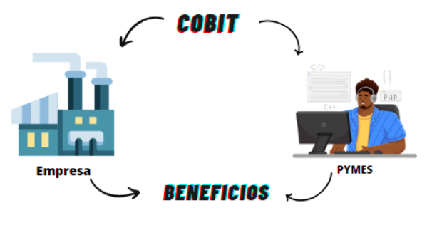

Manual de cobit 5
Introducción:
COBIT (Control Objectives for Information and Related Technologies) es un marco de gestión y control diseñado para ayudar a las organizaciones a lograr sus objetivos de negocio a través de un mejor manejo de la tecnología de la información (TI). COBIT 5 es la versión más reciente de este marco y proporciona un conjunto de principios y prácticas para la gobernanza y gestión de TI.
Características
- Orientado a resultados empresariales.
- Basado en procesos.
- Centrado en el gobierno de TI.
- Integrador y holístico.
- Orientado a riesgos.
Principios
COBIT 5 se basa en cinco principios fundamentales:
- Satisfacer las necesidades de las partes interesadas.
- Cubrir la empresa de extremo a extremo.
- Aplicar un solo marco integrado.
- Permitir un enfoque holístico.
- Separar el gobierno de la gestión.
Ciclo de vida
El ciclo de vida de COBIT 5 consiste en siete fases:
- Definir los requisitos de la empresa.
- Crear un modelo de gobierno.
- Implementar un marco de gobierno.
- Asegurar la integración del marco de gobierno.
- Entregar valor mediante el gobierno de TI.
- Monitorear y evaluar el desempeño del gobierno de TI.
- Alinear, planificar y organizar para el gobierno de TI
Requerimientos
COBIT 5 ayuda a las organizaciones a cumplir con los siguientes requisitos:
- Cumplimiento regulatorio.
- Mejora de procesos de negocio.
- Gestión eficiente de riesgos.
- Maximización del valor de TI.
Clasificación y dominios:
COBIT 5 clasifica los procesos de gobierno de TI en cinco dominios:
- Evaluar, Directrices y Monitorear (EDM).
- Alinear, Planificar y Organizar (APO).
- Construir, Adquirir e Implementar (BAI).
- Entregar, Servicios y Soporte (DSS).
- Monitorear, Evaluar y Valorar (MEA).
Etapas:
Las etapas de implementación de COBIT 5 incluyen:
- Comprensión de las necesidades de las partes interesadas.
- Evaluación de la situación actual.
- Definición de un plan de mejora.
- Implementación del plan de mejora.
- Monitoreo y evaluación continua.
¿Qué podemos inferir?
COBIT 5 proporciona un enfoque estructurado y holístico para la gestión y gobierno de TI, lo que permite a las organizaciones optimizar el valor de sus inversiones en tecnología y minimizar los riesgos asociados.
Ventajas:
- Mejora la alineación entre TI y los objetivos empresariales.
- Proporciona un marco estructurado y escalable.
- Ayuda a gestionar y mitigar los riesgos de TI.
- Facilita la medición y evaluación del desempeño de TI.
- Promueve la transparencia y la responsabilidad en la gestión de TI.
Desventajas:
- Requiere una inversión significativa en tiempo y recursos para implementarse correctamente.
- Puede ser percibido como complejo por algunas organizaciones.
- La adaptación completa puede llevar tiempo y requerir cambios culturales dentro de la organización.
Diferencias entre COBIT e ITIL:
- COBIT se centra en el gobierno y la gestión de TI desde una perspectiva empresarial, mientras que ITIL se centra en la entrega y gestión de servicios de TI.
- COBIT proporciona un marco para la gobernanza de TI, mientras que ITIL se centra en las mejores prácticas para la gestión de servicios de TI.
- COBIT es más amplio en alcance y se puede aplicar a toda la organización, mientras que ITIL se centra específicamente en los servicios de TI.
- COBIT se orienta más hacia la gestión de riesgos y el cumplimiento, mientras que ITIL se centra en la mejora continua de los servicios de TI.